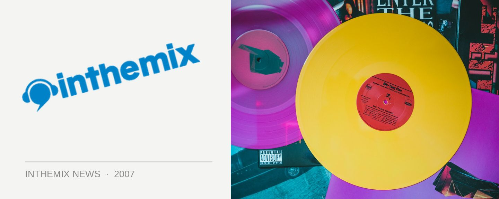

Beastie Boys fight for your right to riot
The Beastie Boys may be getting on a bit, but they’re still stirring people up apparently if the events at a recent festival in Greece are anything to go by. There they were on a Saturday night, New York’s finest just getting their root down and doing their thing on stage at the Ejekt Festival in Athens when their set was rudely interrupted by 30 masked individuals who sparked a riot in the crowd. Utter madness followed!
Identified as a local anarchist group, the 30 masked individuals stormed the festival site at 11.20pm armed with tear gas, baseball bats and other weapons. They burned vehicles and damaged property, injuring several people and it all got so hectic that Underworld was forced to cancel their set and the stadium was evacuated.
Underworld DJ Rick Smith was among the people injured in the craziness. He was initially admitted to an Athens hospital but has since been flown home for further treatment in his home country of Britain. The injuries were serious, but representatives from the Underworld camp have indicated that he is expected to fully recovery in time for the rest of the group’s upcoming tour.
No news yet on whether the Beastie Boys themselves decided to pick up a baseball bat and get in on the rioting action.